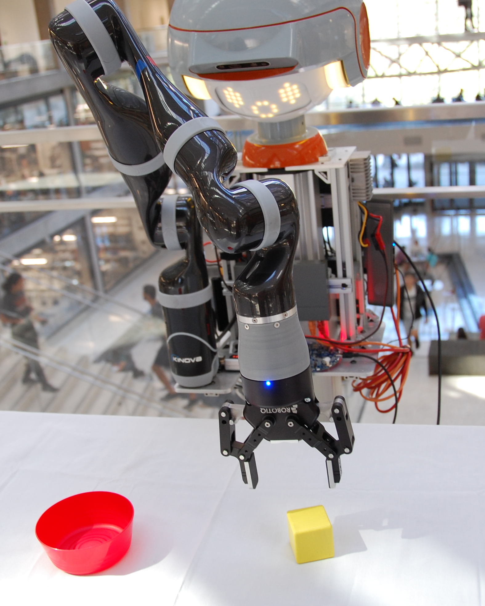

Research
My goal is to develop algorithms that enable robots to help people, especially people with disabilities, as they go about their daily lives.
My goal is to develop algorithms that enable robots to help people, especially people with disabilities, as they go about their daily lives.


Elaine Short completed her PhD under the supervision of Prof. Maja Matarić in the Department of Computer Science at the University of Southern California (USC) in 2017. She received her MS in Computer Science from USC in 2012 and her BS in Computer Science from Yale University in 2010. Elaine is a recipient of a National Science Foundation Graduate Research Fellowship, USC Provost’s Fellowship, and a Google Anita Borg Scholarship. At USC, she has been recognized for excellence in research, teaching, and service: she was awarded the Viterbi School of Engineering Merit Award, the Women in Science and Engineering (WiSE) Merit Award for Current Doctoral Students, the Best Research Assistant Award, Best Teaching Assistant Award, and Service Award from the Department of Computer Science, the Viterbi School of Engineering Undergraduate Research Mentoring Award, and was recognized with the Order of Areté, a university-wide award given to graduates who show excellence in leadership, scholarship, and service during their time at USC. At Yale she was the recipient of the Saybrook College Mary Casner Prize. Her research focuses on the use of social robots to serve the needs of human users in open-ended, real-world interactions, especially groups of people and individuals with disabilities.
Email is best.
Elaine Schaertl Short
elaine@eshort.tech
c/o ECE Department
2501 Speedway
EER 6.804, C0806
Austin, TX 78712